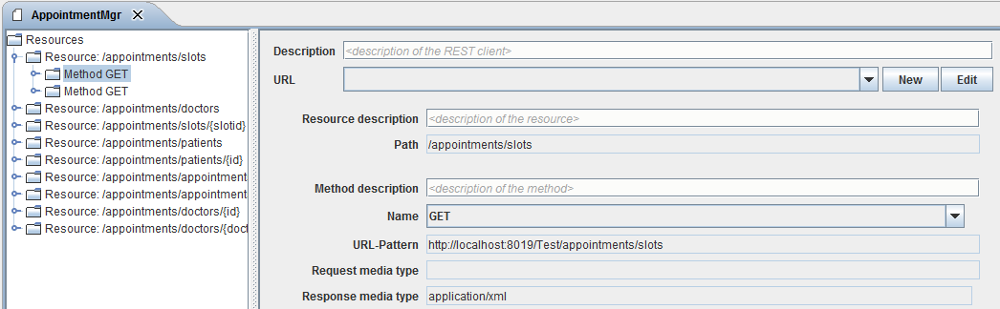

Method Configuration

Topic content
Service method implies declaration of methods that a service can perform. Simply said, methods describe capabilities of a service and they are crucial for service declaration. In case you created REST Service Client manually or you simply want to modify service, you can use method section in Designer that allows method editing.

Figure 55 – REST Service Client - Method Configuration
•Method description - description of created method.
•Name - Defines the REST method type.
•URL-Pattern - read only field stating the URL pattern of the method call based on path settings for the parent Resource element of the element.
•Request media type - The format of the method request. Defined in the Request object of the method.
•Response media type - The format of the method response. Defined in the Response object of the method.